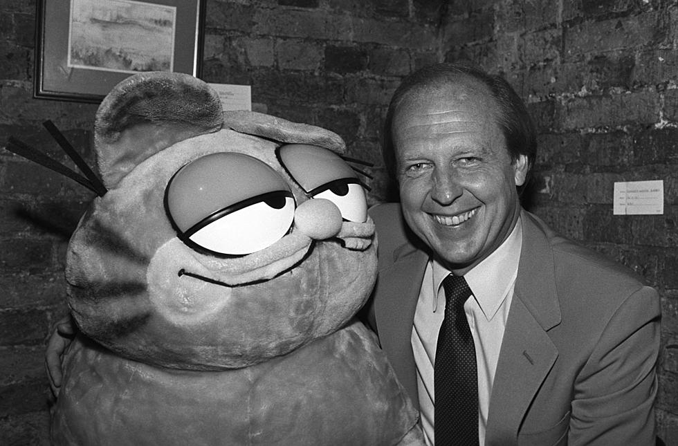
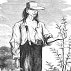

John Green
Author and online creator who grew up in Indiana. Some of his stories take place in the Midwest.
Author and online creator who grew up in Indiana. Some of his stories take place in the Midwest.

Cartoonist from Marion, Indiana and creator of the Garfield comic strip.
Known for: Making Garfield popular in newspapers and TV.
Author of young adult novels and co-creator of online education videos.
Known for: Writing *The Fault in Our Stars*.

Frontier nurseryman and folk hero known for planting apple trees.
Known for: Stories that include time spent in Indiana communities.
Founder of a fried chicken brand, born in Indiana.
Known for: Starting KFC (Kentucky Fried Chicken).